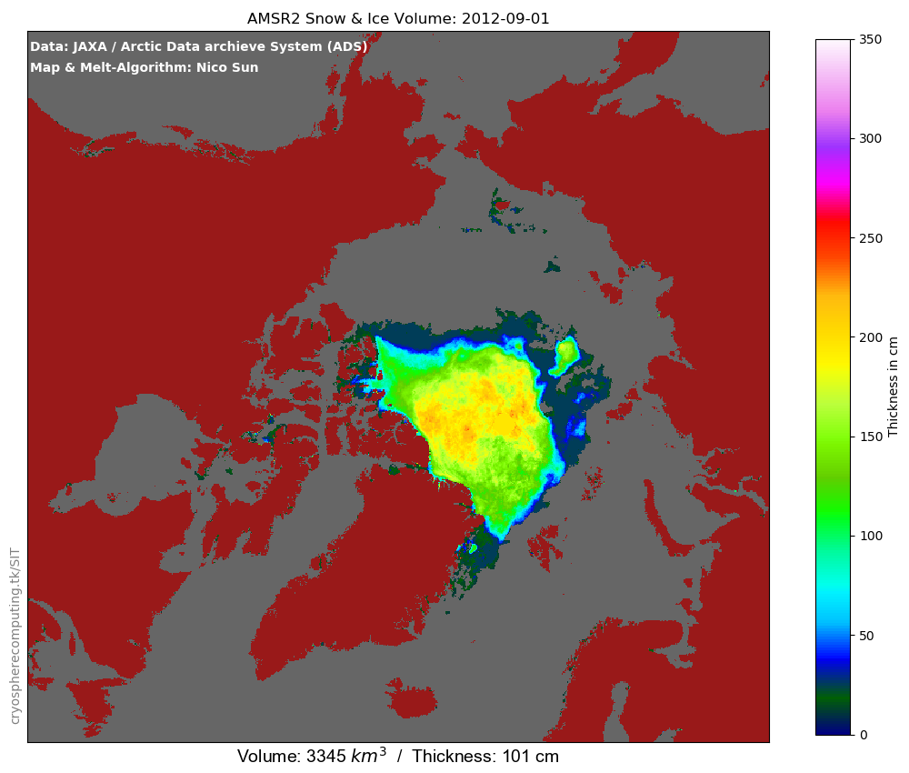
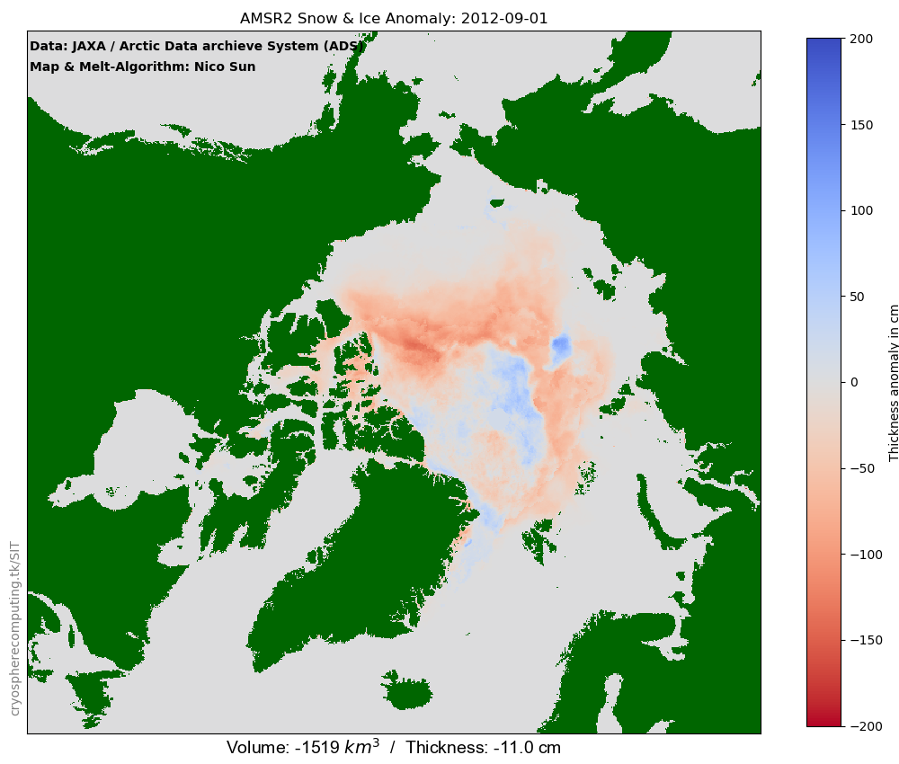

AMSR2 Snow & Ice Volume Past Years
half-monthly sea ice thickness beginning in August 2012


Data used
Hori, M., H. Yabuki, T. Sugimura, T. Terui, 2012, AMSR2 Level 3 product of Daily Polar Brightness Temperatures and Product, 1.00, Arctic Data archive System (ADS), Japan, https://ads.nipr.ac.jp/dataset/A20170123-003